Peapod 用户手册
版本： v0.19.0 最后更新： 2025年12月17日 平台： iOS（iPhone、iPad）
主要特点： - 🎯 房客忠诚度等级 - 银牌 3%、金牌 4%、铂金 5%、钻石 6% 积分返还 - 💰 房东平台费率 - 银牌 13%、金牌 12.5%、铂金 12%、钻石 11.5% - 👥 多角色系统 - 房客、房东、联合房东、保洁员、审核员、管理员 - ✅ 房客零服务费 - 房客预订无需支付平台服务费 - 💬 实时消息系统 - 房客与房东即时通讯，支持图片发送 - 🔍 智能搜索筛选 - 按位置、价格、设施、通勤时间等多维度筛选 - 💳 安全支付系统 - 支持微信支付、支付宝、信用卡等多种支付方式 - ✨ 精选房源审核 - 所有房源经审核员人工审核，确保质量 - 🧹 保洁管理系统 - 房东可分配保洁任务，保洁员可管理日程 - 🌐 中英双语支持 - 完整的中文和英文界面切换
目录
- 简介 返回目录
1.1 什么是 Peapod？
Peapod 是一个优质短租市场平台，连接房客与全球独特住宿。
核心功能： - 由审核团队精选的房源 - 与房东实时通讯 - 忠诚度奖励计划 - 安全支付（微信支付、支付宝） - 全天候客服支持
1.2 用户角色
房客 - 搜索、预订和评价住宿 - 使用高级筛选浏览房源 - 安全支付预订住宿 - 与房东沟通 - 发表评价并赚取积分 - 管理行程和预订
房东 - 发布房源并管理预订 - 创建和编辑房源 - 处理预订请求 - 与房客沟通 - 追踪收入和提款 - 管理团队（联合房东、保洁员）
联合房东 - 管理指定房源 - 编辑房源（定价除外） - 与房客沟通（仅限指定房源） - 查看预订 - 更新日历 - 向房源所有者汇报
保洁员 - 完成清洁任务 - 查看分配的清洁任务 - 标记任务完成 - 上传完成照片 - 报告问题 - 管理排班
审核员 - 审核和批准房源 - 审核房源提交 - 批准或拒绝房源 - 要求改进 - 监控质量标准 - 与房东沟通
系统管理员 - 管理平台 - 用户管理 - 平台配置 - 查看分析报告 - 监控平台状态
1.3 系统要求
- iOS： 17.0 或更高版本
- 设备： iPhone 或 iPad
- 网络： 所有功能均需联网
- 定位： 可选（提升搜索体验）
- 通知： 可选（建议开启）
- 开始使用 返回目录
2.1 安装
- 从 App Store 下载 Peapod
- 打开应用
- 授予权限（通知、定位 - 可选）
- 初始页面
 /p>
/p>
2.2 创建账户
注册方式： - 🍎 Apple 登录（推荐）- 一键登录，支持 Face ID/Touch ID，最安全 - 🔑 Google 登录 - 使用 Google 账户（中国不可用） - 📱 手机号码 - 短信验证（免费通道审批中） - 📧 邮箱和密码 - 传统方式，全球可用 - 💬 微信（2026年Q1推出）- 中国常用 - 💬 WhatsApp（计划中）- 全球可用
邮箱注册步骤： 1. 点击”注册” 2. 选择角色：房客或房东 3. 输入邮箱和密码（至少6个字符） 4. 同意服务条款 5. 点击”创建账户” 6. 验证邮箱（查收收件箱） 7. 完成首次设置
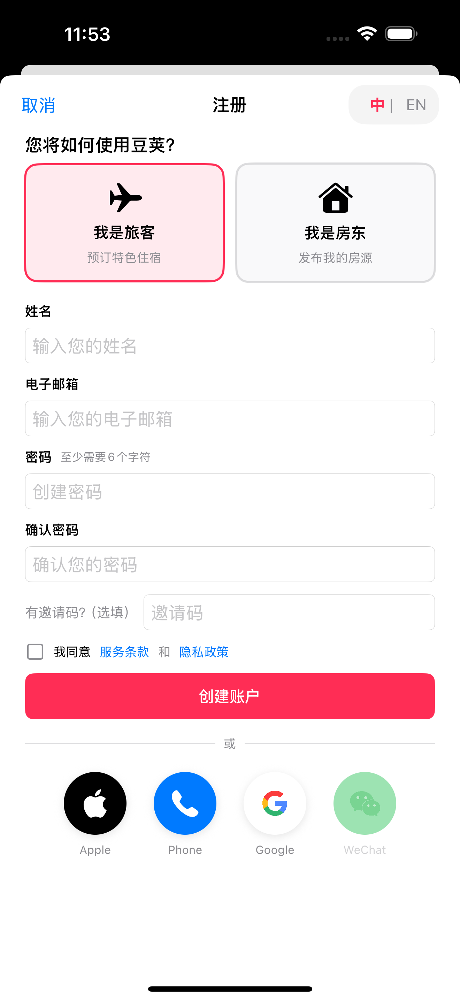
Apple/Google 注册步骤： 1. 点击”注册” 2. 选择角色 3. 点击 Apple (🍎) 或 Google (🔑) 图标 4. 完成认证 5. 确认角色和地区 6. 选择语言 7. 点击”继续” → 即时访问（无需邮箱验证）
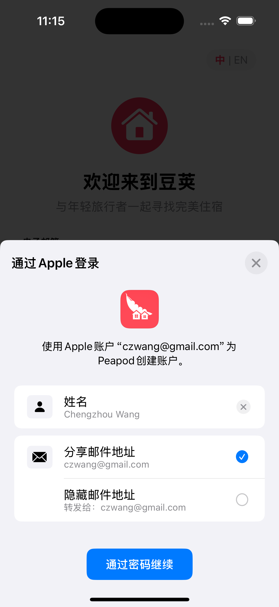 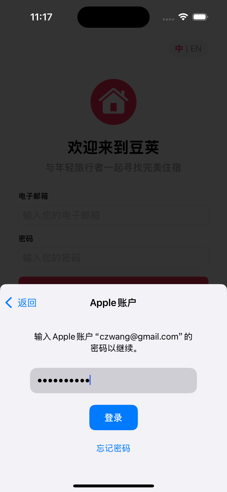
2.3 登录
登录方式： 1. 打开 Peapod 2. 点击”登录” 3. 选择方式： - 邮箱 - 输入邮箱和密码 - Apple/Google/手机 - 一键认证 4. 访问您的账户 > 语言设置: 首次在中国区使用时默认显示简体中文，用户可在登录页面右上角切换至 English 界面。
忘记密码： 1. 点击”忘记密码？” 2. 输入邮箱 3. 查收重置链接邮件 4. 创建新密码 5. 登录
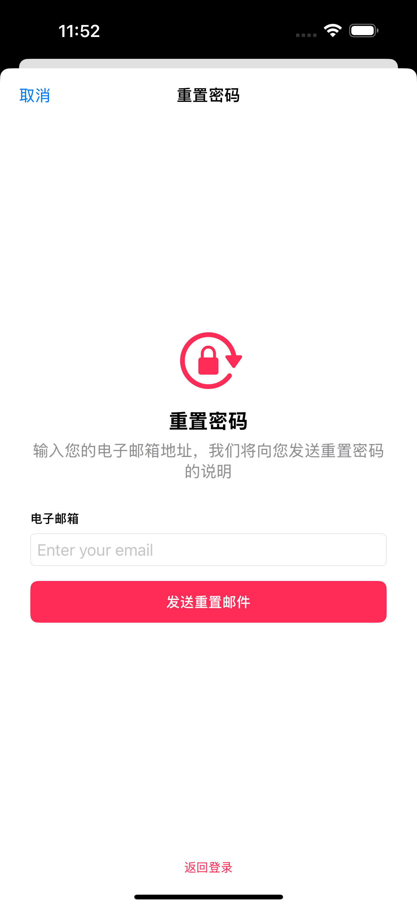
2.4 退出登录
退出当前设备： 1. 点击个人资料标签（人像图标） 2. 滚动到底部 3. 点击退出登录（红色按钮） 4. 确认 5. 跳转至登录页面
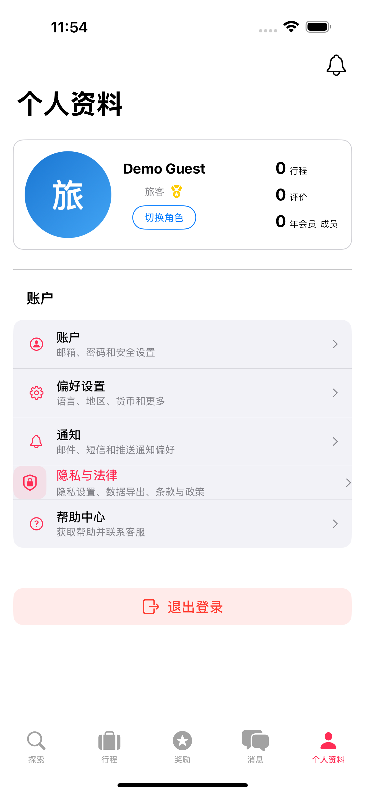
退出后： - 仅退出当前设备 - 数据保留在服务器 - 其他设备保持登录 - 可随时重新登录
2.5 角色切换
理解角色：
Peapod 有以下角色类型： - 房客 - 搜索和预订住宿的旅客 - 房东 - 发布和管理自己房源的业主（独立角色，不可切换） - 联合房东 - 协助房东管理房源 - 清洁员 - 完成房源清洁任务 - 审核员 - 审核房源质量（独立角色） - 管理员 - 平台管理（独立角色）
角色切换规则：
| 主要角色 | 可切换到 |
|---|---|
| 房客 | 联合房东、清洁员（如已被邀请） |
| 房东 | ❌ 不可切换（专用角色） |
| 审核员 | ❌ 不可切换（专用角色） |
| 管理员 | ❌ 不可切换（专用角色） |
房客切换角色：
如果您是房客，且被房东邀请为联合房东或清洁员，可以切换角色：
- 点击个人资料标签
- 点击切换角色
- 选择：联合房东或清洁员
- 应用重新加载并显示新的标签栏
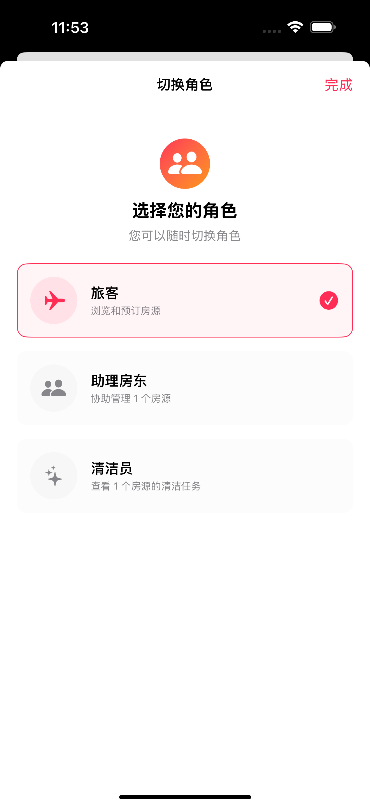
设置默认登录角色：
如果您有多个角色，可以选择登录时默认使用哪个角色。
- 个人资料 → 偏好设置
- 在账户行为下，点击默认登录角色
- 从可用角色中选择
- 此后每次登录都将使用该角色
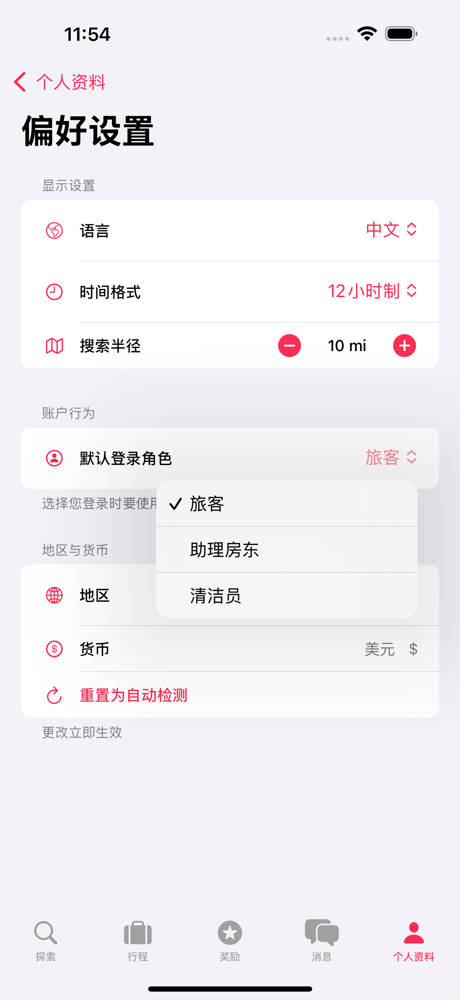
注意： 房东账户是独立的，不能切换到其他角色。如需使用房客功能，请使用单独的房客账户。
切换后变化： - 底部标签栏更新为新角色 - 仪表板显示角色相关数据 - 仅显示当前角色相关的数据 - 权限自动调整
提示： - 选择的默认角色会保存并在登录时保持 - 如果失去某角色访问权限（如被移除保洁员身份），应用自动回退到房客角色 - 多角色用户：切换到房客进行预订，切换到房东管理房源，切换到保洁员处理任务 - 当前角色显示在个人资料顶部，带有角色徽章
- 通用功能 返回目录
所有用户角色通用的功能。
3.1 个人资料与设置
3.1.1 个人资料管理
查看个人资料： 1. 点击个人资料标签（人像图标） 2. 查看：头像、姓名、角色徽章、统计（行程数、评价数、会员时长） 3. 如已验证邮箱或手机，显示验证标记
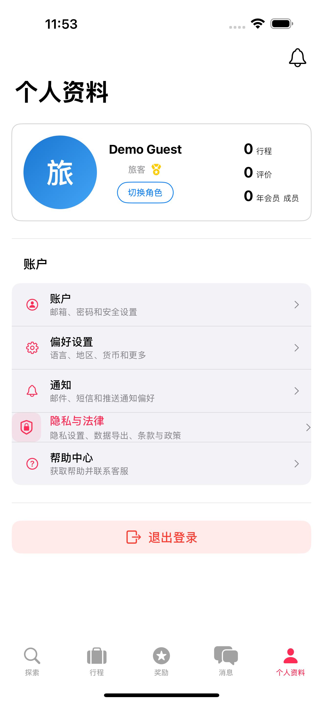
编辑个人资料： 1. 点击头像 2. 编辑：头像、姓名、手机、简介（最多500字）、兴趣、语言（仅房东） 3. 语言显示带有国旗图标（🇬🇧、🇪🇸、🇫🇷 等） 4. 点击保存更改
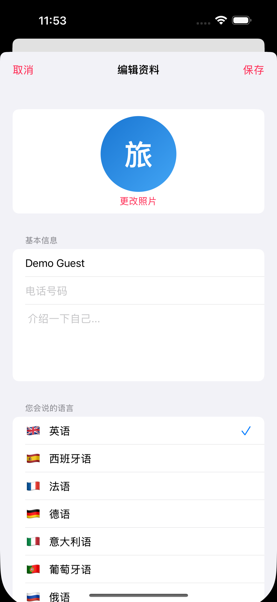
3.1.2 通知设置
访问： 个人资料 → 通知
配置通知： - 邮件通知 - 开启/关闭 - 推送通知 - 开启/关闭 - 短信通知 - 开启/关闭
设置适用于所有通知类型，包括消息、预订、任务和系统更新。
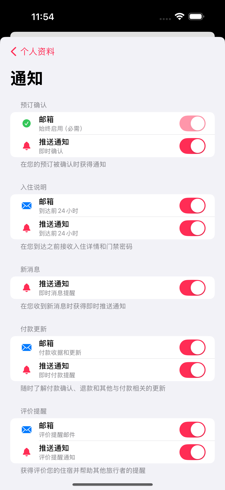
3.1.3 账户设置
访问： 个人资料 → 账户
账户信息： - 邮箱 - 更新（即将推出） - 密码 - 修改密码（即将推出） - 双重认证 - 启用 2FA（即将推出） - 关联账户 - Apple、Google 状态（即将推出）
验证：
验证徽章有助于与其他用户建立信任。查看您的验证状态：
- 邮箱验证 - 已验证显示绿色勾号，未验证显示”未验证”
- 手机验证 - 已验证显示绿色勾号，未验证显示”未验证”
- 身份验证（仅房东）- 已验证显示绿色勾号，未验证显示”可选”
账户管理： - 删除账户 - 需密码确认的永久删除（30天宽限期）
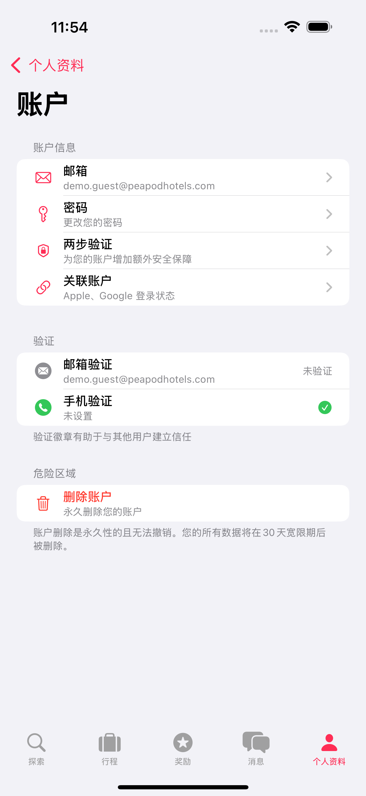
3.1.4 偏好设置
访问： 个人资料 → 偏好设置
显示设置： - 应用语言 - 英语、中文、西班牙语等（影响界面文字） - 时间格式 - 12小时制或24小时制 - 搜索半径 - 地图搜索的默认半径（1-100英里）
账户行为： - 默认登录角色 - 选择登录时默认使用的角色 - 显示所有可用角色：房客、房东、联合房东、保洁员 - 仅对有多个角色的用户显示 - 决定登录时的默认标签栏和仪表板 - 可随时更改，登录后保持 - 如失去所选角色访问权限，自动回退到房客
地区与货币： - 地区 - 选择您的国家（🇺🇸、🇨🇳、🇬🇧 等） - 货币 - 根据地区自动设置（USD、CNY、EUR 等） - 重置为自动检测 - 从设备自动检测地区（手动设置后显示）
地区检测使用您的设备设置，可手动覆盖。货币为只读，自动匹配所选地区。
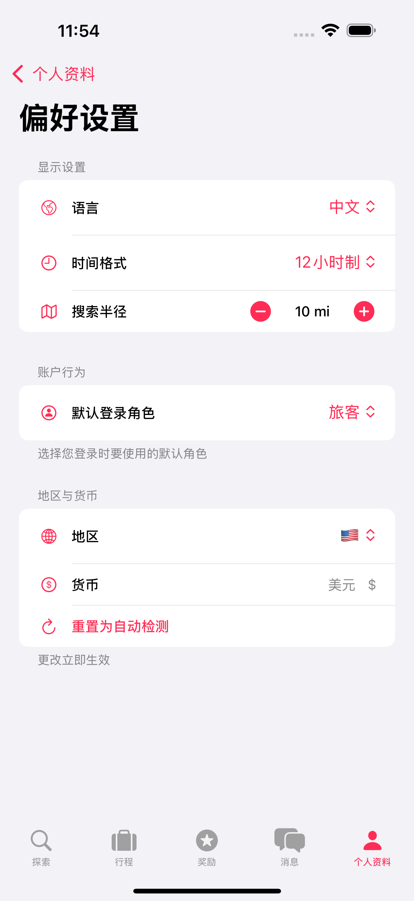
3.1.5 隐私与法律
访问： 个人资料 → 隐私与法律
状态： 即将推出
此部分将包括： - 隐私设置（个人资料可见性、位置共享） - 数据导出和管理 - 法律文件（服务条款、隐私政策）
注意：目前可在注册时或帮助中心查看法律文件。
3.1.6 帮助中心
访问： 个人资料 → 帮助中心
可用选项： - 关于 - 查看应用信息和版本 - 反馈 - 分享反馈、报告问题、请求功能
即将推出： - 常见问题 - 常见问题解答 - 联系客服 - 邮件和在线客服 - 用户指南 - 使用教程
3.1.7 反馈
访问： 个人资料 → 帮助中心 → 反馈
分享您的反馈：
通过分享您的体验、建议或报告问题来帮助我们改进 Peapod。
提交方式： 1. 点击个人资料标签 2. 进入帮助中心 3. 点击反馈 4. 选择类别（可选）：问题报告、功能请求、一般反馈、用户体验、性能、安全等 5. 输入标题（必填） 6. 填写详细描述（必填） 7. 附加截图（可选，最多3张） 8. 点击提交反馈
包含内容： - 您的反馈自动标记平台信息（设备、系统版本、应用版本） - 所有提交都有唯一ID追踪 - 可随时查看反馈历史
响应时间： - 所有反馈在48小时内审核 - 严重问题优先处理 - 功能请求纳入未来更新考虑
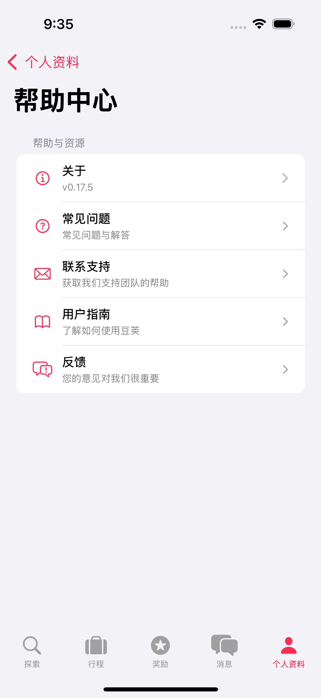 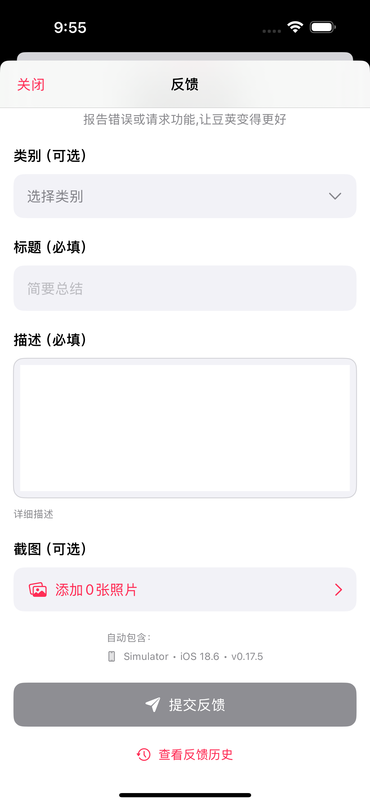
3.2 消息系统
访问： 点击消息标签（气泡图标）
功能： - 对话按最近时间排序 - 未读数量徽章 - 已读回执和输入指示器 - 图片分享（相机图标） - 消息模板（房东/联合房东） - 搜索对话
发送消息： 1. 打开对话 2. 输入消息 3. 点击发送（纸飞机图标） 4. 查看状态：发送中 → 已发送 → 已读
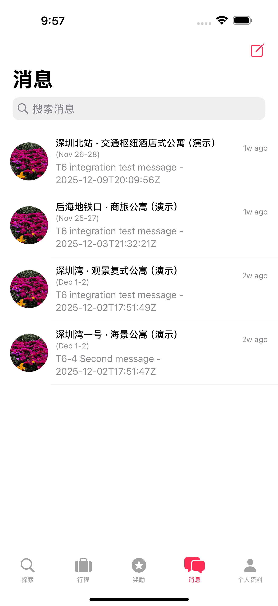 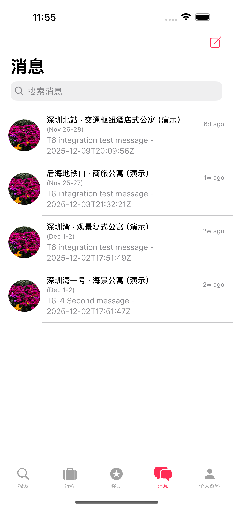
角色权限： - 房客 - 与房东沟通预订事宜 - 房东 - 与房客、联合房东、保洁员沟通 - 联合房东 - 与房客沟通（仅限指定房源） - 保洁员 - 与房东沟通（关于任务） - 审核员 - 与房东沟通（关于房源） - 管理员 - 与任何用户沟通
3.2.1 按角色筛选消息
消息根据您的角色和指定房源自动筛选。您只能看到与角色相关的对话。
房东视图（所有房源）： - 查看所有自有房源的对话 - 筛选切换：“所有房源”或选择特定房源 - 完整消息历史（包括联合房东加入前的消息）
联合房东视图（仅限指定房源）： - 仅查看所管理房源的对话 - 房源筛选自动填充指定房源 - 无法查看未指定房源的对话 - 示例：如果管理5个房源中的2个，只能看到这2个
保洁员视图（有限/无）： - 通常看不到房客消息 - 可向房源房东发送问题消息 - 无法参与房客对话
房客视图： - 仅查看自己预订的对话 - 与房东沟通已确认或待确认的预订
- 房客指南 返回目录
详细文档请参阅 房客指南。
房客功能： - 🔍 使用高级筛选浏览和搜索房源 - 📅 安全支付预订住宿 - 💬 入住前后与房东沟通 - ⭐ 发表带照片的评价（最多5张） - 🎁 赚取积分（预订金额的1%） - 📱 管理行程和预订 - 👥 推荐好友获得奖励
- 房东与联合房东 返回目录
详细文档请参阅 房东与联合房东指南。
房东功能： - 🏠 创建和编辑房源 - 💰 设置价格和可用日期 - 📊 管理预订（接受/拒绝） - 👥 邀请联合房东和保洁员 - 💵 追踪收入和申请提款 - 📧 使用消息模板 - 🏅 获得品质徽章（超级房东等）
联合房东功能： - ✏️ 编辑房源（定价除外） - 💬 与房客沟通（指定房源） - 📅 更新日历 - 📊 查看预订 - ⚠️ 不能：修改价格、批准预订、访问提款
- 保洁员指南 返回目录
详细文档请参阅 保洁员指南。
保洁员功能： - 📋 查看分配的清洁任务 - ✅ 标记任务完成 - 📸 上传完成照片 - ⚠️ 向房东报告问题 - 📅 管理排班 - 💬 与房东沟通任务事宜
- 审核员指南 返回目录
详细文档请参阅 审核员指南。
审核员功能： - 📋 审核房源提交 - ✅ 批准或拒绝房源 - 💬 要求房东改进 - 📊 监控质量标准 - 📧 与房东沟通房源事宜 - 📈 追踪审核绩效
- 附录 返回目录
8.1 计划功能
2026年Q1
- 微信登录（开发者账户审批中）
2026年Q2
- WhatsApp 登录（全球市场）
- 修改预订（更改日期/人数）
- 团体预订
- 房东分析仪表板（高级版）
- 房客身份验证（上传证件）
- 视频导览
2026年Q3
- 体验活动（本地活动）- 中国版1.0暂不可用
- 长期住宿（月度折扣）
- 企业差旅账户
- 礼品卡
2026年Q4
- AR 房间预览
- 虚拟入住
- 智能家居集成
- 礼宾服务
8.2 故障排除与常见问题
常见问题
登录问题： - 检查邮箱拼写 - 尝试”忘记密码” - 尝试社交登录（Apple、Google） - 更新 iOS 到最新版本 - 必要时重装应用
搜索问题： - 检查位置拼写 - 尝试更广泛的搜索（城市而非街区） - 移除日期筛选 - 清除所有筛选条件 - 刷新结果
预订问题： - 检查卡片信息和余额 - 尝试 Apple Pay - 联系您的银行 - 检查网络连接 - 带预订编号联系客服
性能问题： - 关闭并重新打开应用 - 重启设备 - 更新应用到最新版本 - 清除应用缓存 - 检查网速
常见问题解答
问：我的支付信息安全吗？ 答：是的。我们使用 Stripe（PCI合规）。卡片信息加密，从不存储。Apple Pay 使用生物识别认证。
问：什么时候扣款？ 答：立即进行授权冻结。入住前24小时正式扣款。退款遵循取消政策。
问：如何取消预订？ 答：行程 → 选择预订 → “取消预订”。退款取决于房东的取消政策（灵活、中等或严格）。详细退款比例和时间请参阅房客手册附录D。
问：如果房源与描述不符怎么办？ 答：用照片记录，联系房东，向客服报告。可能有资格获得退款。
问：如何成为房东？ 答：以房东身份注册，创建房源，提交审核。24-48小时内批准。
问：Peapod 收取什么费用？ 答：中国版1.0： 房客支付 0%（无服务费）。房东支付分级费用：银牌13%、金牌12.5%、铂金12%、钻石11.5%。详情请参阅房东手册附录J。
问：可以修改预订吗？ 答：目前不支持 - 需取消后重新预订。功能将于2026年Q2推出。
问：积分如何使用？ 答：赚取预订金额的1%。100积分 = 1美元。用于未来预订。中国版1.0： 积分仅能用于预订折扣 - 不支持提现。积分在24个月不活动后过期。
问：即时预订与申请预订有什么区别？ 答：即时预订立即确认。申请预订需要房东批准（最多24小时）。
问：如何联系客服？ 答：应用内：帮助 → 联系客服（24/7在线）。邮箱：support@peapod.com。
8.3 版本历史
完整版本历史请参阅 版本历史摘要。
最新版本
v1.0.0（2025年11月22日） - 中国版 1.0 - 费用模式变更： 房客支付0%服务费 - 房东分级费用： 银牌13%、金牌12.5%、铂金12%、钻石11.5% - 联合房东功能： 完整的联合房东房源管理功能 - 手机/短信验证： 通过 Twilio 短信验证身份（美国和中国 +86） - 取消政策附录： 详细的灵活/中等/严格政策及退款表 - 积分限制： 仅限预订折扣（不支持提现） - 保洁员照片要求： 每个房间必须1张照片 - 审核员SLA： 正式服务等级协议（目标24小时，最长48小时） - 体验活动延期： 中国版1.0暂不可用
v0.16.2（2025年11月5日） - 个人资料页重组与主要角色 - 验证徽章移至账户设置子菜单 - 地区与货币整合到偏好设置（扁平化UI） - 编辑个人资料中的语言添加国旗图标 - 改进个人资料导航结构 - 新增： 偏好设置中的主要角色设置 - 选择登录时的默认角色（房客或房东）
v0.14.9（2025年10月28日） - 照片评价 - 评价可上传最多5张照片 - 评价卡片中的照片画廊 - 修复房源评分显示 - 更好的错误处理
v0.14.8（2025年10月27日） - 排序与评分 - 6种排序模式：推荐、价格、最近、评分最高、最受欢迎、最佳性价比 - 贝叶斯评分系统防止刷分 - 简化排序UI
v0.14.7（2025年10月26日） - 地图增强 - 地图上的搜索和AI搜索按钮 - 内联半径滑块（1-50英里） - PostGIS后端集成
v0.14.0-0.14.6 - 智能定价、自动邮件、搜索圆圈、数据库视图
v0.13.9（2025年10月19日） - ULTRA 解决方案 - 所有表的数据库视图 - 自动 snake_case → camelCase 转换 - 减少90%的bug
v0.13.3-0.13.8 - 联合房东、徽章、本地化、筛选书签
完整历史请参阅 版本历史摘要。
用户手册结束
获取最新更新，请访问：www.peapodhotels.com